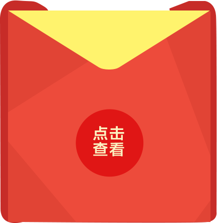

<?php 
require_once('jssdk.php');
$sdk = new JSSDK('wx287b1bf2a3f9fd46','36a8d4dcf82bcce63d3e80965eb22f19');
$res = $sdk->getSignPackage();
$nonceStr = $res['nonceStr'];
$appId = $res['appId'];
$signature = $res['signature'];
$timestamp = $res['timestamp'];
?><!DOCTYPE HTML>
<html>
<head>
<meta http-equiv="Content-Type" content="text/html; charset=utf-8">
<meta content="width=device-width,initial-scale=1.0,maximum-scale=1.0,user-scalable=no" id="viewport" name="viewport">
<link type="text/css" rel="stylesheet" href="style/style.css" />
<link type="text/css" rel="stylesheet" href="style/animate.min.css" />
<title>红顶奖</title>	
</head>
<body>
<div class="index">
  <div class="pinlei">
    <h1>试试手气</h1>
    <div class="hongbao">
      

      <h2><a href="toupiao.html">投票结果查询</a></h2>
    </div><!--hongbao/-->
    
    <div class="hmangban">
        
        
        
    </div><!--hmangban/-->
    
    <div class="money">
      <p>恭喜中奖<span id="moneys">50</span>元</p>
      <p>宝贝将由</p>
      <p>[中国家电网]发出</p>
      <p>请注意查收</p>
    </div>
  
  </div><!--pinlei/-->
</div><!--index/--> 
<script type="text/javascript" src="js/jquery-1.8.1.min.js"></script><!-- 
<script type="text/javascript" src="js/script.js"></script>   -->
</body>
<script>
$('.hmangban img:eq(0)').one("click", function () {
var wechat = 'oYRZbt1OAg1gUaZLsgXZHgJZuBk0';
	$.post('lottery.php',{wechat:wechat},function(data){
		$(".hmangban img:eq(0)").addClass('animated shake').animate({
		    opacity:"1"
		 },1000)
		.animate({
		  opacity:"0"
		},300);
		if(data == '10' || data == '5' || data == '2' || data == '3'){
		    $(".hmangban img:eq(1),.money").animate({
				opacity:"1"
			},2000); 
			$("#moneys").html(data)
		}else{
			$(".hmangban img:eq(2)").animate({
			  opacity:"1"
			},2000); 
		}
		alert(data);
		//$(".hmangban img:eq(0)").attr('id','close');
	//	alert($(".hmangban img:eq(0)").attr('id'));
	})
})

</script>
<script type="text/javascript" src="http://res.wx.qq.com/open/js/jweixin-1.0.0.js"></script>
<script>
    var nonstr    = '<?php echo $nonceStr?>';
    var timestamp = '<?php echo $timestamp?>';
    var sign      = '<?php echo $signature?>';
    var appId     = '<?php echo $appId?>';
    wx.config({
        debug: true, // 开启调试模式,调用的所有api的返回值会在客户端alert出来，若要查看传入的参数，可以在pc端打开，参数信息会通过log打出，仅在pc端时才会打印。
        appId: appId, // 必填，公众号的唯一标识
        timestamp: timestamp, // 必填，生成签名的时间戳
        nonceStr: nonstr, // 必填，生成签名的随机串
        signature: sign,// 必填，签名，见附录1
        jsApiList: ['onMenuShareTimeline',
            'onMenuShareAppMessage',
			'hideMenuItems','hideAllNonBaseMenuItem'] // 必填，需要使用的JS接口列表，所有JS接口列表见附录2
    });

    wx.ready(function(){

		wx.hideAllNonBaseMenuItem();
    })

</script>
</html>
